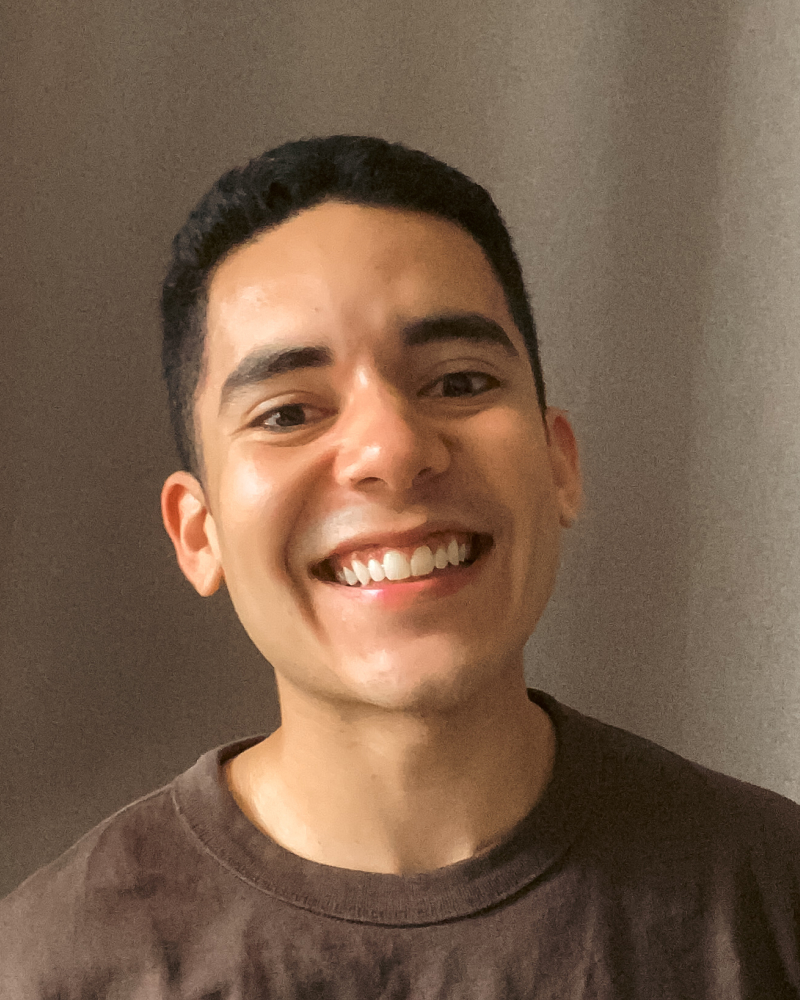

We have a process, but it is difficult to follow.
How I help
I map what is currently happening and turn it into a workflow, checklist, SOP or template the team can return to.
Digital operations for small remote teams
Most small teams do not start with a perfectly designed system. One spreadsheet becomes four. A booking platform stops matching the payment list. An important process stays inside someone's head.
I go inside the tools, follow how the work moves and organize the parts that have become difficult to manage.

What this has looked like recently
The work changes from team to team. Sometimes it is technical. Sometimes it is simply finding the missing step that has been creating confusion for everyone.
Events and wellness
Registrations, payment plans, follow-ups, coach communication, internal trackers and the documents that help the rest of the team see what is happening.
Environmental and nonprofit work
Keeping data pipelines and reporting dashboards reliable, fixing slow or expensive queries, checking for missing data and making sure the numbers live in the right place.
Internal operations
Comparing software tools, preparing migrations and documenting recurring work so the process becomes easier to repeat, explain and hand over.
Over time, I found that the work I enjoy most happens between people and tools.
It is not only setting up the platform. It is understanding who needs to use it, what they need to know and what could go wrong after everyone returns to their normal work.
I am calm, curious and comfortable working independently. Give me the goal, access to the current process and the people I need to ask. I will explore how things work, document what I find and keep the work moving.
My background includes five years in cybersecurity in banking, followed by data engineering, reporting and digital operations. It is a slightly unusual path, but it has made me careful with systems and very comfortable with messy details.
I learn what the team is doing today, not what the documentation says should happen.
I look for unclear ownership, repeated manual work and information that gets lost between tools.
I create workflows, documentation, trackers or small automations that fit the real team.
The goal is a process people can understand, use and maintain after the initial setup.
Let's work together
I am available for part-time remote contract work, around 8–10 hours per week. I work asynchronously from Europe and communicate in English and Spanish.
Typical rate: starting from US$30 per hour, depending on the work and scope.